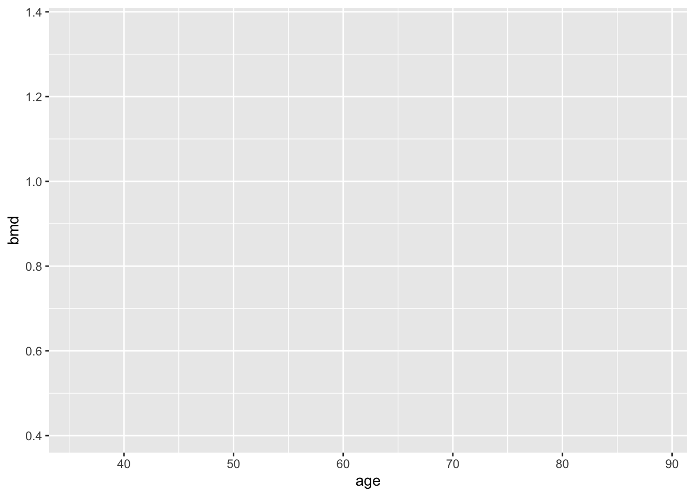
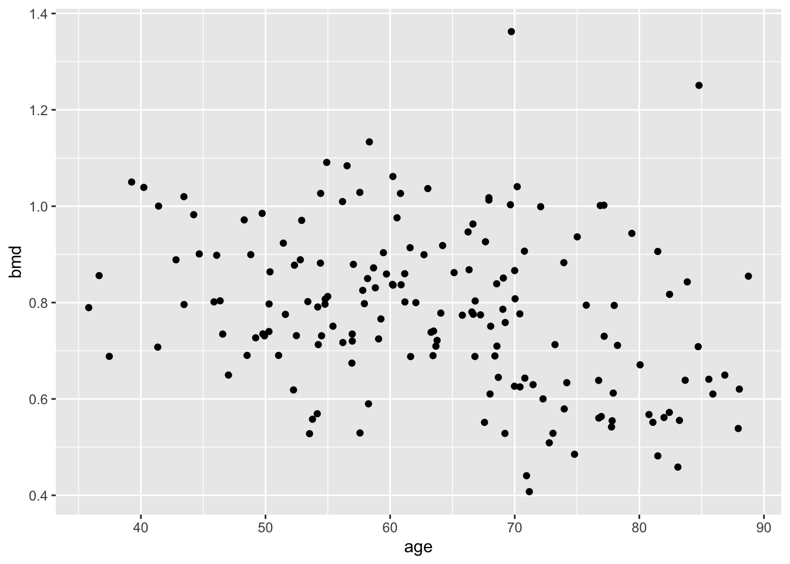
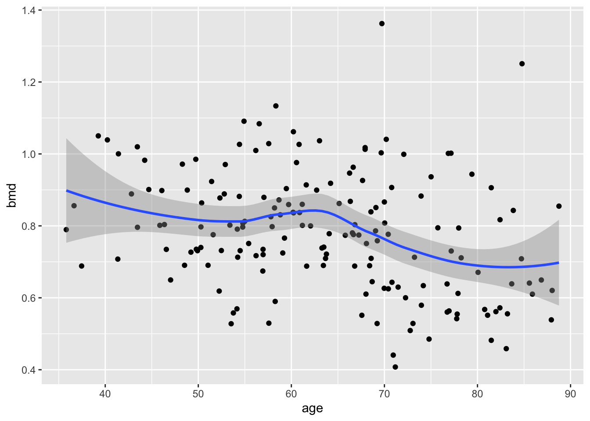
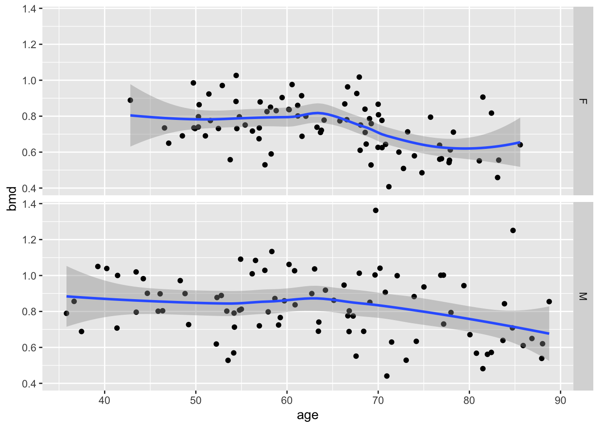
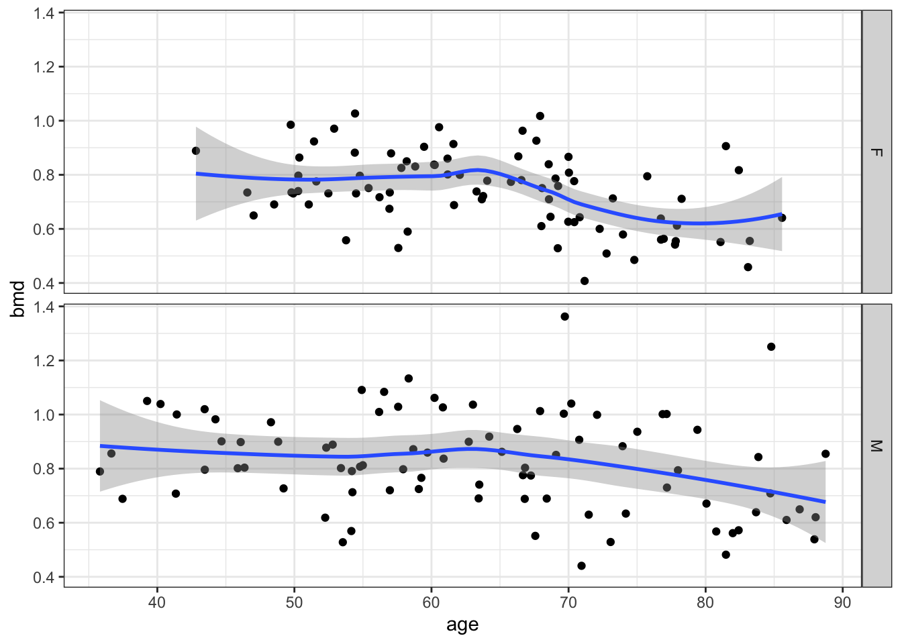

2 Model Accuracy
2.1 Introduction
In machine learning there is a big emphasis in the prediction ability of the model. We will see several measures of performance for different methods but one commonly used measure (in particular when \(Y\) is continuous) is the mean squared error (MSE).
The MSE is defined as:
\[ MSE = E \big[ (\hat{Y} - Y)^2 \big] \]
where \(\hat{Y} = \hat f(\mathbf{X})\).
We can estimate the MSE using the same data (training data) that we have used to obtain \(\hat f(\mathbf{X})\) (the training MSE). If we have \(n\) observations,
\[ y= \begin{pmatrix} y_1 \\ y_2 \\ \vdots\\ y_n \end{pmatrix} \]
and
\[ \mathbf{x}= \begin{pmatrix} x_{11} & \dots & x_{p1} \\ x_{12} & \dots & x_{p2} \\ \vdots & \vdots & \vdots\\ x_{1n} & \dots & x_{pn} \end{pmatrix} \]
the estimate of MSE based on the data would then be:
\(MSE = \frac{1}{n} \sum_{i=1}^n \big(y_i - \hat f(x_{1i},\dots, x_{pi})\big)^2\\\)
However, this MSE tends to overestimate the true predictive ability, given that the model is optimised to the training data. Ideally, we would like to evaluate the performance of the model in an independent dataset (test data) with \(y^{new}\) and \(\mathbf{x}^{new}\).
One important concept associated with the MSE that we will be talking later in the coming modules, is the bias-variance tradeoff. The MSE can be decomposed into bias and variance:
\[\begin{equation} MSE = \mathrm{E} \big[ (\hat{Y} - Y)^2 \big] \\ =\mathrm{E} \big(\hat{Y}^2\big) + \mathrm{E}\big(Y^2\big) - 2\mathrm{E}(\hat{Y}Y) \\ = \mathrm{E} \big(\hat{Y}^2\big) + Y^2 - 2Y\mathrm{E}(\hat{Y}) + \mathrm{E}^2(\hat{Y}) - \mathrm{E}^2(\hat{Y})\\ =\underbrace{ \big[\mathrm{E}(\hat{Y}) - Y \big]^2}_{bias^2} + \underbrace{\mathrm{E} \big(\hat{Y}^2\big) - \mathrm{E}^2(\hat{Y})}_{var(\hat{Y})} \end{equation}\]
If we use a method that produces unbiased predictions for \(Y\), such as the ordinary least squares (OLS) for linear regression, then \(\mathrm{E}(\hat{Y}) - Y =0\). In this case, the MSE simplifies to the \(var(\hat{Y})\).
We can see from the decomposition, that an unbiased estimation (prediction) of \(Y\) does not lead necessarily to the lowest MSE possible. Once again, the OLS is a good example of this. In the case of high colinearity of the predictors \(\mathbf x\), we know that the OLS becomes quite “unstable” or in other words, the OLS will have a high variance. In this situation, it may be better to choose a different methods that can produce some bias but will have a much lower variance, resulting in a lower MSE. This is the case of the ridge estimator, as an alternative for the OLS when this estimator has high variance (we will talk about ridge regression in module 4).
Several methods that we will discuss use this principle of exchanging variance for bias.
2.2 Readings
Read the following chapters of An introduction to statistical learning:
2.3 R review
2.3.1 Task 1 - Using libraries
Currently, there are more that 16,000 packages (also called libraries) available at CRAN (Comprehensive R Archive Network). Packages are the fundamental units of reproducible R code; they include reusable R functions, the documentation that describes how to use them, and sample data.
We will install and use a library that produces tables similar to the ones used for publication. This library is called tableone`.
install.packages("tableone",
repos = "https://cran.rstudio.com/" ) #downloads the package##
## The downloaded binary packages are in
## /var/folders/nj/00dlv8r97qvczd7trdqw283w0000gn/T//RtmpMQkaK8/downloaded_packageslibrary(tableone) #loads the packageRead the bmd.csv
dataset in R and use the function CreateTableOne() from the package tableone
to describe the variable age, bmd and sex.
bmd.data <- read.csv("https://www.dropbox.com/s/7wjsfdaf0wt2kg2/bmd.csv?dl=1")
CreateTableOne(c("age", "bmd", "sex"), data=bmd.data)##
## Overall
## n 169
## age (mean (SD)) 63.63 (12.36)
## bmd (mean (SD)) 0.78 (0.17)
## sex = M (%) 86 (50.9)Let’s repeat the table above but now stratified by fracture status (variable fracture)
CreateTableOne(c("age", "bmd", "sex"), data=bmd.data, strata = "fracture")## Stratified by fracture
## fracture no fracture p test
## n 50 119
## age (mean (SD)) 69.77 (13.38) 61.05 (10.97) <0.001
## bmd (mean (SD)) 0.62 (0.10) 0.85 (0.14) <0.001
## sex = M (%) 25 (50.0) 61 (51.3) 1.0002.3.2 Task 2 - Using ggplot
ggplot2 is a powerful library that implements a “grammar of graphics”
developed by Wilkinson in 1999.
There are seven grammatical elements: * Data - The dataset * Aesthetics -How the variables in the data are mapped to visual properties (aesthetics) of geoms * Geometries - The visual element used for plotting the data * Statistics - Representation of the data to help understand relationships * Facets - Split in multiple plots * Coordinates - Systems of coordinates * Themes - Color schemes, font sizes,….
The combination of these elements, following certain rules, produces the plot
Suppose we want to plot the scatter for bmd and age.
First we get and load the library
install.packages("ggplot2",
repos = "https://cran.rstudio.com/" )##
## The downloaded binary packages are in
## /var/folders/nj/00dlv8r97qvczd7trdqw283w0000gn/T//RtmpMQkaK8/downloaded_packageslibrary(ggplot2)We start by defining the data and aesthetics
ggplot(bmd.data, aes(x=age, y=bmd)) 
now, we add the geometry (in this case, dots)
ggplot(bmd.data, aes(x=age, y=bmd)) +
geom_point()
let’s add a smooth line (statistics)
ggplot(bmd.data, aes(x=age, y=bmd)) +
geom_point() +
stat_smooth() 
and split by sex (facets)
ggplot(bmd.data, aes(x=age, y=bmd)) +
geom_point() +
stat_smooth() +
facet_grid(sex~.)
Finally, change the theme
ggplot(bmd.data, aes(x=age, y=bmd)) +
geom_point() +
stat_smooth() +
facet_grid(sex~.) +
theme_bw()
2.3.3 Task 3 - Writing a function
Write a function that computes the Body Mass Index = weight(kg)/height\(^2\)(m) using weight and height as arguments
bmi.func <- function(W, H){
bmi <- W/H^2
bmi <- round(bmi,1) #rounds 1 decimal place
return(paste("The BMI is ", bmi))
}What is the BMI for an individual with 1.83m weighting 89Kg?
bmi.func(89, 1.83)## [1] "The BMI is 26.6"